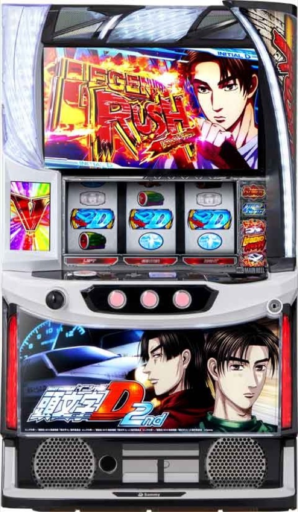

スマスロ頭文字D 2nd
30G＋αから始まるLEGEND RUSHで上乗せとBONUSを重ね、対戦相手別のレジェンドバトルをPUSHで勝ち抜く。
- 導入
- 2024年10月
- メーカー
- サミー
- 分類
- パチスロ
主要スペック
通常時のレジェンドバトル、15Gのドリフトゾーン／インフィニティドリーム、初回30G＋α・以降20G＋αのLEGEND RUSH、BIG、限界領域、ナイトメアマシン、3Gの覚醒ZONEまでを機種専用画面で再現します。
- LEGEND RUSHは初回30G＋α・以降20G＋α
- AT中BONUSは約1/199・30G・純増約4.0枚/G
- レジェンドバトルは相手別に約35〜100%
- ナイトメアマシンは100G以上・純増約4.0枚/G
スマスロ頭文字D 2ndの見どころと計算条件
通常時のレジェンドバトル、15Gのドリフトゾーン／インフィニティドリーム、初回30G＋α・以降20G＋αのLEGEND RUSH、BIG、限界領域、ナイトメアマシン、3Gの覚醒ZONEまでを機種専用画面で再現します。
頭文字D 2ndを数字で早分かり
レジェンドバトルからLEGEND RUSH、ナイトメアマシンまでの流れと、設定ごとの結果差を固定レートで比較できます。
30秒で分かる頭文字D 2nd
初回30G＋α・以降20G＋αのATで上乗せとBONUSを重ね、相手別のレジェンドバトルを勝ち抜くゲーム数上乗せ＋セット継続型です。
こんな遊び方に向いている
- 残りゲーム数を見ながら直乗せとBONUSを待ちたい
- 8人の対戦相手を確認して最終PUSHを押したい
- 限界領域・ナイトメアマシン・覚醒ZONEを狙いたい
遊ぶ前に確認したいこと
- LB・AT初当り、主要ゲーム数、純増、相手別期待度は公開値
- ゲーム数上乗せとBONUS獲得枚数を分けて表示
- 未公表の入口比率とイベント出現率は体験用代表値
通常時の4つのAT入口
通常時のメインはレジェンドバトル。高橋啓介、中里毅、岩城清次、高橋涼介のいずれかと対戦し、勝利でLEGEND RUSHへ進みます。ドリフトゾーンは15G・成功期待度約75%で、失敗時の10.2%はインフィニティドリームへ移行します。
インフィニティドリームも15G・成功期待度約75%。成功すればロングフリーズ、失敗でもAT濃厚です。通常時のレジェンドボーナスは1/16384で、AT・セットストック・ATレベル3以上が濃厚。専用画面では入口を消化して最終PUSHで結果を開きます。
LEGEND RUSHとゲーム数上乗せ
LEGEND RUSHはゲーム数上乗せ＋セット継続型。初回は30G＋α、2セット目以降は20G＋α、純増は約2.4枚/Gです。秋名山ステージ中のレア役は、ゲーム数直乗せ、満月ステージ、BONUSをトリプル抽選します。
AT中BONUSは約1/199。BIG／レジェンドボーナスはいずれも30G・純増約4.0枚/Gで、終了時に10G以上を上乗せします。専用画面では残りゲーム数を減らし、直乗せとBONUSを別々のPUSHで表示します。
対戦相手別レジェンドバトル
ATの規定ゲーム数消化後はレジェンドバトルへ。勝利期待度は高橋啓介35%、中里毅60%、庄司慎吾65%、小柏カイ75%、岩城清次80%、真子＆沙雪90%、須藤京一95%、高橋涼介100%です。
勝利すれば次セットへ継続。岩城清次勝利は次回満月ステージ、高橋啓介勝利時の一部と高橋涼介完全勝利はフルブーストの契機です。専用画面では対戦相手を先に表示し、PUSHで勝敗を開きます。
限界領域とナイトメアマシン
限界領域はセット継続型のゲーム数上乗せ特化ゾーン。拓海先行なら継続濃厚、弱点役なら50G以上、さらに1/2で11000回転フリーズから3桁上乗せのチャンスです。
ナイトメアマシンは100G以上・純増約4.0枚/Gで、レア役のゲーム数上乗せも優遇。当該セットのレジェンドバトルは継続濃厚です。文太バトル勝利、ロングフリーズ、AT初当りの一部などが入口です。
覚醒ZONEとロングフリーズ
エンディング後などは3Gの覚醒ZONEへ。ブラックアウト発生でAT継続となり、成功期待度は60%超。成功時の次回レジェンドバトルは高橋涼介が濃厚です。
ロングフリーズは限界領域レベルMAXとナイトメアマシンを獲得し、平均獲得は約3600枚。専用画面ではインフィニティドリーム成功や通常時レジェンドボーナスの一部からこのルートへ進みます。
固定条件と簡略化する範囲
- 約31G/50枚・1,000円46枚貸し・5.2枚交換で固定
- 設定1〜6のLB・AT初当り・出玉率は公開設定別値
- 通常時入口、ゲーム数上乗せ、BONUS、相手別LB、限界領域、ナイトメアマシン、覚醒ZONEを専用進行
- 通常時の入口比率、AT中イベント出現率、特化ゾーン当選率など未公表部分は体験用代表値
- 19,000枚到達時はコンプリート表示
平均Gと投資目安の計算
掲載するLEGEND RUSH初当り約1/405.5は設定1基準です。当サイトでは50枚あたり31G、1,000円46枚貸しの固定条件から、設定1基準の平均投資目安を約14,200円と計算します。
シミュレーターでは設定1〜6を均等抽選します。設定1〜6で公開されている初当り値を個別に使います。公開されていない特化ゾーン・上位到達率の設定差は加えません。 換金は5.2枚交換で固定し、結果とランキングに設定を表示します。
シミュレーション結果の見方
当るまでレジェンドバトル・LEGEND RUSHまでのゲーム数
設定設定1・2・3・4・5・6から抽選された今回の設定
上位到達覚醒ZONEとナイトメアマシンへの到達
最終収支差枚と5.2枚交換の収支目安
結果は自動で「マイ記録」に保存され、同じ機種を何回試したか、最高収支、勝率をあとから確認できます。
簡易シミュレーターについて
レジェンドバトル・LEGEND RUSH・ナイトメアマシンの流れを固定条件で体験できます。JavaScriptを有効にすると、この位置にシミュレーター、演出、マイ記録、機種別ランキングが表示されます。
結果は娯楽・確率理解のための参考表示です。金銭的価値や交換価値はなく、実際の勝敗や収支を保証しません。18歳未満の方の利用はお控えください。
頭文字D 2ndのよくある質問
頭文字D 2ndはどんな台？
通常時のレジェンドバトル、15Gのドリフトゾーン／インフィニティドリーム、初回30G＋α・以降20G＋αのLEGEND RUSH、BIG、限界領域、ナイトメアマシン、3Gの覚醒ZONEまでを機種専用画面で再現します。 LEGEND RUSHは初回30G＋α・以降20G＋αが主な確認ポイントです。
頭文字D 2ndの平均投資目安は？
設定1基準のLEGEND RUSH初当り約1/405.5と、50枚あたり31G・46枚貸しの固定条件から、平均14,200円を目安として表示します。実際の設定や遊技状況で結果は変わります。
設定とゲームの流れはどう抽選する？
開始時に設定1・2・3・4・5・6から1つを均等抽選し、レジェンドバトル、LEGEND RUSH、覚醒ZONE、ナイトメアマシンの順で到達を判定します。設定は最終結果とランキングに表示します。
収支はどう計算する？
1,000円46枚貸し・5.2枚交換の固定条件で投資、換金、収支目安を計算します。実店舗の再プレイ、持ちメダル、端数処理は含みません。